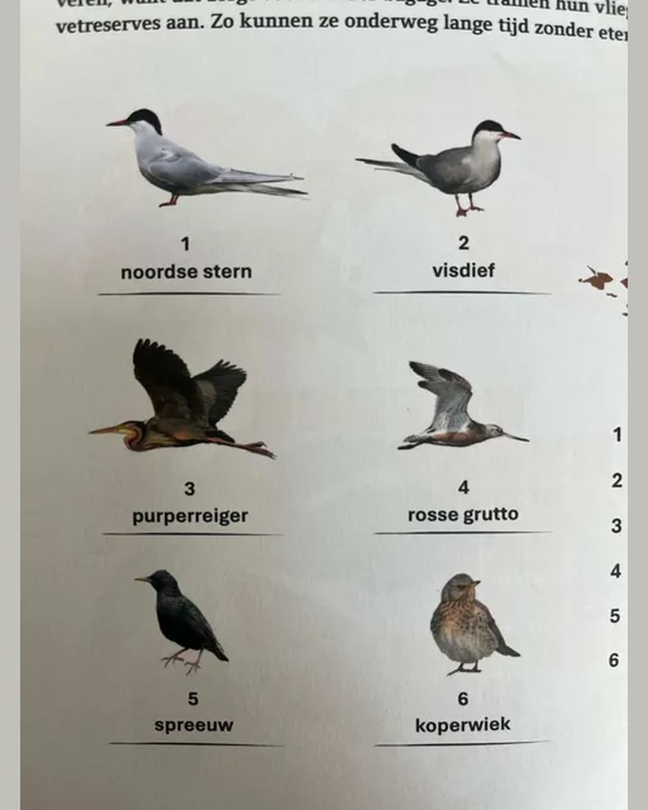
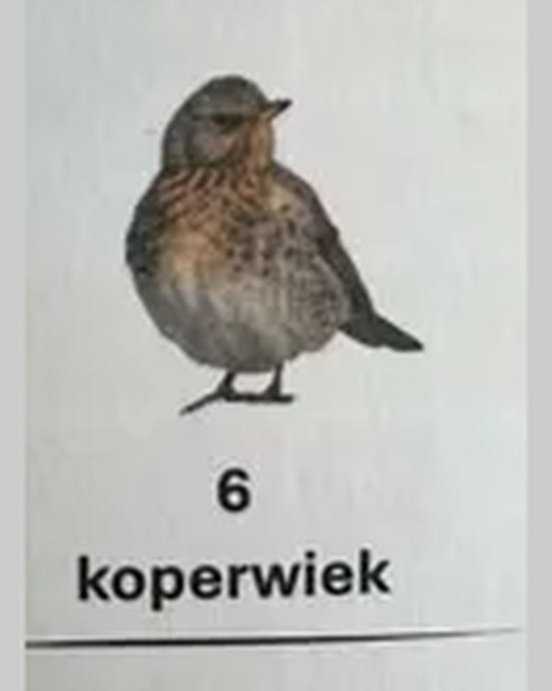

Kramsvogel, geen koperwiek
- Op de foto
- Kramsvogel
- Het ging over
- Koperwiek


Nummer 6 in Het Natuur Puzzelboek van Natuurmonumenten heet "koperwiek". Het is een kramsvogel.
Het verschil zit in de kop. Vogelbescherming Nederland: "De kop is opvallend getekend met een roomwitte wenkbrauwstreep en een witte mondstreep." Dat is bij de koperwiek het eerste wat je ziet, en op deze vogel is er geen spoor van te bekennen. Wat je wel ziet is een overwegend grijze kop boven een borst met een oranjegele tint en zware zwarte vlekken. Dat is een kramsvogel.
De koperrode flanken en ondervleugeldekveren waar een koperwiek in de vlucht aan te herkennen is, ontbreken hier ook. Van koper is op deze vogel weinig te vinden.
Beide soorten komen hier overwinteren, dus de verwarring is te volgen. Alleen staat er bij een determinatiepuzzel wel een naam onder.
Het boek is gemaakt door @denksport, in samenwerking met @natuurmonumenten.
Volgende keer ook even naar de wenkbrauw kijken en niet alleen naar de spikkels, Natuurmonumenten!
Bron: Vogelbescherming Nederland